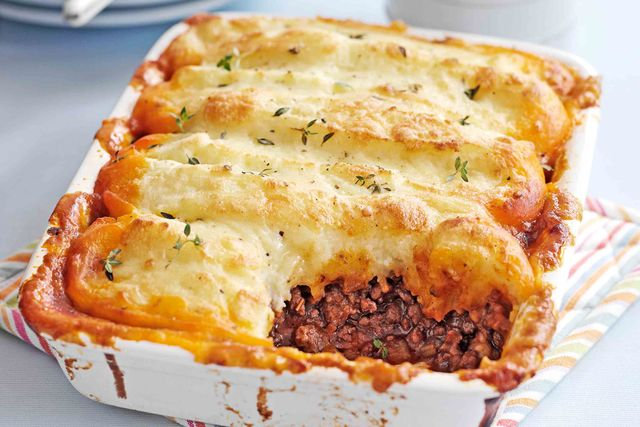

Cottage Pie

Original Recipe Source - BBC Good Food
Ingredients
- Olive Oil
- 1.25kg Beef Mince
- 2 Onions
- 3 Carrots
- 3 Celery Sticks
- 2 Garlic Cloves
- 3 tbsp Plain Flour
- 1 tbsp Tomato Purée
- Large Glass of Red Wine
- 850ml Beef Stock
- 4 tbsp Worcestershire Sauce
- A Few Sprigs of Thyme
- 2 Bay Leaves
For The Mash
- 1.8kg of Potatoes
- 225ml Milk
- 25g Butter
- 200g Strong Cheddar
- Nutmeg
Method
- Heat 1 tbsp olive oil in a large saucepan and fry 1¼kg beef mince until browned - you may need to do this in batches. Set aside as it browns.
- Put the other 2 tbsp olive oil into the pan, add 2 finely chopped onions, 3 chopped carrots and 3 chopped celery sticks and cook on a gentle heat until soft, about 20 mins.
- Add 2 finely chopped garlic cloves, 3 tbsp plain flour and 1 tbsp tomato purée, increase the heat and cook for a few mins, then return the beef to the pan.
- Pour over a large glass of red wine, if using, and boil to reduce it slightly before adding the 850ml beef stock, 4 tbsp Worcestershire sauce, a few thyme sprigs and 2 bay leaves.
- Bring to a simmer and cook, uncovered, for 45 mins. By this time the gravy should be thick and coating the meat. Check after about 30 mins - if a lot of liquid remains, increase the heat slightly to reduce the gravy a little. Season well, then discard the bay leaves and thyme stalks.
- Meanwhile, make the mash. In a large saucepan, cover the 1.8kg potatoes which you've peeled and chopped, in salted cold water, bring to the boil and simmer until tender.
- Drain well, then allow to steam-dry for a few mins. Mash well with the 225ml milk, 25g butter, and three-quarters of the 200g strong cheddar cheese, then season with freshly grated nutmeg and some salt and pepper.
- Spoon the meat into 2 ovenproof dishes. Pipe or spoon on the mash to cover. Sprinkle on the remaining cheese.
- If eating straight away, heat oven to 220C/200C fan/gas 7 and cook for 25-30 mins, or until the topping is golden.
- If you want to use a slow cooker, brown your mince in batches then tip into your slow cooker and stir in the vegetables, flour, purée, wine, stock, Worcestershire sauce and herbs with some seasoning. Cover and cook on High for 4-5 hours. Make the mash following the previous steps, and then oven cook in the same way to finish.